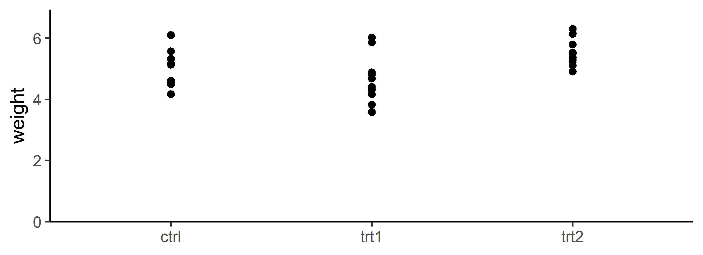

Why are the StdErr all the same?
![]()
I am often asked something along the lines of:
I found that the Standard Error is always the same. Why is that?
What is “always the same”?
More precisely, the person refers to the standard errors of the means (SEM) that were obtained based on a linear model1. Here is an example:
library(tidyverse)
library(emmeans)
mod1 <- lm(weight ~ group, data = PlantGrowth) # fit linear model
emmeans(mod1, specs = "group") # get (adjusted) weight means per group group emmean SE df lower.CL upper.CL
ctrl 5.03 0.197 27 4.63 5.44
trt1 4.66 0.197 27 4.26 5.07
trt2 5.53 0.197 27 5.12 5.93
Confidence level used: 0.95 Indeed, the values in the SE column are all 0.197 and thus identical for all group means.
Why is this unexpected?
In my experience, some people find this unexpected because they are used to seeing simple descriptive statistics that are calculated separately per group:
PlantGrowth %>%
group_by(group) %>%
summarise(
mean = mean(weight), # arithmetic mean
stddev = sd(weight), # standard deviation
n = n(), # number of observations
stderr = sd(weight) / sqrt(n()) # standard error of the mean
)# A tibble: 3 × 5
group mean stddev n stderr
<fct> <dbl> <dbl> <int> <dbl>
1 ctrl 5.03 0.583 10 0.184
2 trt1 4.66 0.794 10 0.251
3 trt2 5.53 0.443 10 0.140Indeed, the values in the stderr column are not identical but different.
Why are the latter SEM not identical?
When calculating statistical measures like we just did, i.e. separately per group, we are treating the data for the different groups as separate samples. Moreover, because calculations are done separately, each group/sample gets its own mean, standard deviation etc. Because of how the standard error of a sample mean is calculated2, different standard deviations lead to different standard errors.
So why are the former SEM identical?
The key point here is that the former means (=adjusted means3) are not the same thing as the latter means (= simple arithmetic sample means). To obtain adjusted means, we must first fit a simple linear model and by default these models assume homogeneous error variances4. As a consequence, the SEM are also homogeneous/identical (given the experiment is balanced5).
And that is basically the answer to the question: Adjusted means on one hand are based on a linear model which has an underlying assumption that the error variance is homogeneous. Calculating arithmetic means separately per group on the other hand automatically leads to separate variances/standard deviations and thus standard errors.
Which is better?
First of all, there is no straight-forward answer to this question. Both are related and each serves a purpose by simply making different assumptions. To really drive this point home, let’s fit a not-so-default linear model that actually doesn’t assume homogeneous error variances, but instead allows for heterogeneous error variances per group:
library(nlme)
mod2 <- gls(weight ~ group, # fit linear model
weights = varIdent(form = ~ 1 | group), # one error variance per group
data = PlantGrowth)
emmeans(mod2, specs = "group") # get (adjusted) weight means per group group emmean SE df lower.CL upper.CL
ctrl 5.03 0.184 9.00 4.61 5.45
trt1 4.66 0.251 9.01 4.09 5.23
trt2 5.53 0.140 9.01 5.21 5.84
Degrees-of-freedom method: satterthwaite
Confidence level used: 0.95 Indeed, we now find the same three standard errors as for the arithmetic means above. Regarding these two models, it is actually possible to determine which one is better e.g. by comparing their AIC values - the model with the lowest AIC wins:
So now we know that for this specific dataset and comparing these two models, the one that assumes a homogeneous error variance is the better choice. Put simply, it is “better” because the lower AIC says that the advantage of fitting multiple instead of one error variance does not outweigh the extra effort. We can get a better understanding for this result by actually looking at how the values per group vary (around their mean):

So, yes - the weights seem to display a somewhat consistent amount of variation across the groups. One can imagine a scenario where it would have been different, e.g. because the weights of ctrl vary much more than those of the other groups. In such a scenario the AIC would have probably claimed a model with heterogeneous error variances per group to be more appropriate.
As a final note, keep in mind that the example here is very simple. A major advantage of using adjusted means is that the model they are based on can be more complex and e.g. include block effects. Arithmetic (sample) means that are calculated as we did for the descriptive statistics - i.e. separately per group - do not account for block effects and basically don’t know anything about the weights of the other groups.
Footnotes
a.k.a. adjusted means, estimated marginal means (emmeans), least-squares means (lsmeans), modelbased means↩︎
a.k.a. adjusted means, estimated marginal means (emmeans), least-squares means (lsmeans), modelbased means↩︎
a.k.a. Homoscedasticity, Homogeneity of Variance, Assumption of Equal Variance↩︎
a balanced design has an equal number of observations for all possible level combinations; read more e.g. here↩︎